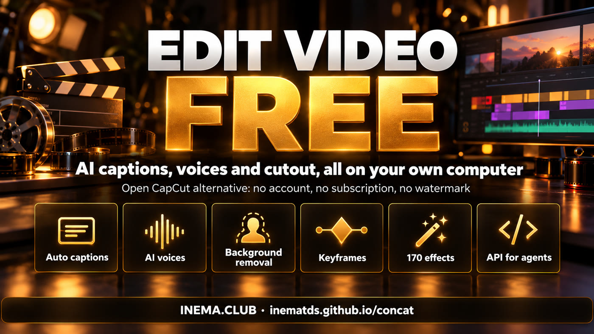

Concat is a free program for editing video, built as an alternative to CapCut. It is for anyone who makes Reels, Shorts, TikToks, YouTube videos, tutorials and podcast clips. It does what people usually open CapCut for (cutting, captioning, narrating with an AI voice, removing the background, animating), but without charging, without asking for an account and without sending your videos to the internet. Just install it on Windows, Mac, Linux or Android; the AI models are downloaded once and then work offline.
What it is
Everything you use in CapCut, without the catches
Open-source project by developer Jareer (jub0t/Concat, AGPL-3.0 license), with over 5,000 stars on GitHub. This repository is INEMA's copy (fork) for study, with the guide in three languages.

🚫 No watermark, no account
Free forever: no subscription, no login and no feature locked behind payment.
🔒 100% local
Nothing is sent to the cloud. Captions (Whisper), voices and background cutout run on your machine, even offline.
🤖 Agents can edit too
It has a JSON-RPC, gRPC and MCP API, plus a command line. A script or AI agent can cut video with it.
💬 Automatic captions
Local Whisper: you pick the model size and the captions land on the timeline already styled.
🗣️ AI voice and cloning
Free local voices, or any voice from a few seconds of recording.
🧍 Removes the background
People, objects, or paint the mask yourself.
🎞️ Keyframes
Position, scale, rotation, opacity, volume and effect parameters, with a curve editor.
✨ 170+ effects
Filters, transitions and text animations rendered on the GPU, live in the preview.
📤 Exports up to 4K 60
H.264, HEVC and AV1, with 10-bit color. Voice cleanup for audio in one button.
How it works
From file to finished video, without leaving your disk
A native Rust engine with a GPU compositor does the heavy lifting: proxies, hardware decoding and a smooth preview even in 4K. The editor window is built with Slint.
Install→Drag in the video→Cut on the timeline→Captions · voice · background→Effects and titles→Export
For people
The editor, with a magnetic timeline, multiple tracks and multiple timelines in the same project. In 25 languages, including Portuguese.
For machines
concat-cli with probe, render, api (JSON-RPC over standard input) and serve (the same API on a socket at 127.0.0.1:7420). MCP is covered in the author's documentation.
Prerequisites
To use it, just install. To build, Rust and FFmpeg 7
Most people only need the installer. Building from source is for those who want to study the engine or use the command line.
Use the app
Windows (x86 and ARM), macOS (Intel and Apple), Linux (x86_64 and ARM), Android and iOS. Machine requirements are on the author's site.
# official downloadconcatenate.pages.dev
Build
Rust (version in src/Cargo.toml), FFmpeg 7+ development libraries, cmake and a C++ compiler.
# macOSbrew install ffmpeg cmake
AI models
Captions, voices and cutout use models downloaded once from the Settings menu. After that they work offline.
# in the app
Settings › Models
User guide · step by step
Your first video in Concat
Current version: 0.2.7 (beta, October 2026). It works, but still has rough edges.
1
Download the installer
The easiest way: open the official site concatenate.pages.dev and click Download. It gives you the right file for your machine. On Linux you can also download from the terminal.
# official site (Windows, Mac, Linux, Android)https://concatenate.pages.dev/# Linux ARM (e.g. DGX Spark), from the terminalgh release download v0.2.7 -R jub0t/Concat -p '*linux-aarch64.deb'sudo apt install ./Concat-0.2.7-linux-aarch64.deb
# Linux x86_64: swap aarch64 for x86_64 (.deb, .rpm and .AppImage are available)
2
Allow the app if the system complains
The releases are not signed yet. On Windows, in the SmartScreen warning click More info › Run anyway. On Mac:
In Settings, choose the size of the captions model (Whisper) and the voices. A bigger model is more accurate and needs a stronger machine.
# in the app
Settings › Models › Download
4
Drag in the video and cut
Drop the file into the project and onto the timeline. Split, trim, ripple, join, freeze a frame and change speed. Turn on the magnetic timeline if you like.
5
Caption, narrate and remove the background
Generate the automatic captions and adjust the style; create a narration with a local voice or clone a voice from a few seconds of audio; remove the background from a person or object. For sound, one button cleans up the voice and levels the volume.
6
Export
Choose H.264 (most compatible), HEVC or AV1, up to 4K 60 with 10-bit color. No watermark.
7
Optional: run from source and the command line
To study the engine or let an agent edit. Commands from the repository itself:
git clone https://github.com/inematds/concat && cd concat/src
cargo run -p concat# the editor (debug mode)cargo run -p concat-cli -- probe video.mp4 # reads the file infocargo run -p concat-cli -- render video.mp4 out.mp4 --frames 120
cargo run -p concat-cli -- api '{"method":"catalogue.list","kind":"filter"}'cargo run -p concat-cli -- serve # API JSON-RPC em 127.0.0.1:7420
Screenshots from the project itself: media library, preview, properties panel and a multi-track timeline.
Dark theme: preview in the center, effects and properties on the sides, video, text and audio tracks below.Light theme: the same project. Project files are the same on every system.
Status
Where the project stands
Status checked on 10/15/2026 in the original repository.
Beta
Version 0.2.7Released on 10/13/2026 for Windows, macOS, Linux, Android and iOS (iOS via sideload).
License
AGPL-3.0, name and logo reservedThe code is free to study and modify. Anyone who distributes a modified version must use a different name and icon (the author's brand policy).
INEMA
Fork for studyThis fork holds the code and the guide. The author's build and release workflows live in .github/workflows-upstream/, disabled; only the guide publishing runs here.